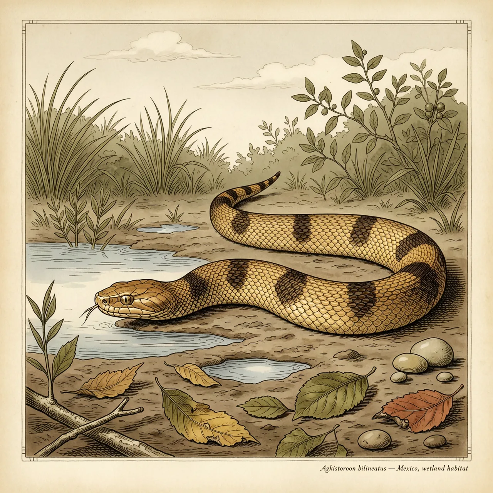
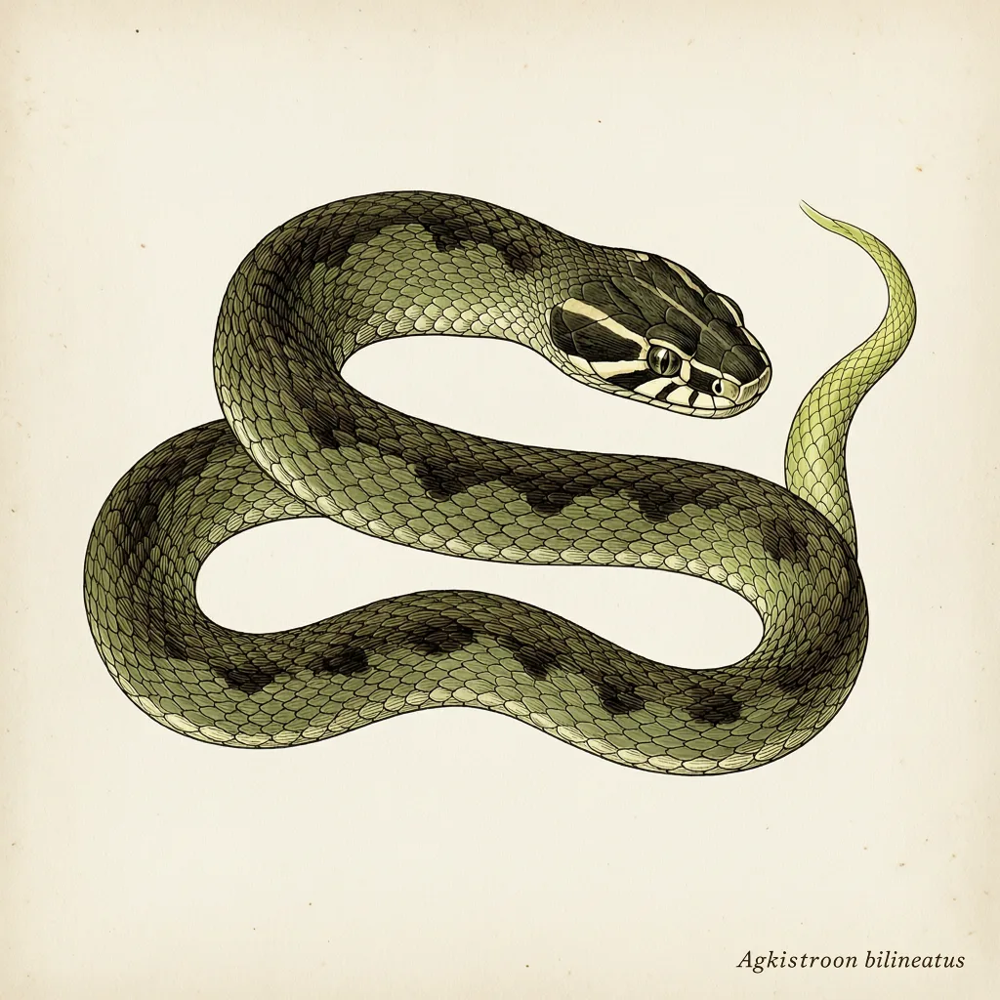

墨西哥蝮体型厚重，平均体长60公分，从墨西哥东北部一路分布到哥斯达黎加西北部。它受威胁时先逃，逃不掉才昂首张口威吓；可一旦咬中，皮肤和肌肉会严重肿胀坏死，在墨西哥约每6宗咬伤就有1宗需要截肢。幼蛇还会用浅绿色的尾尖引诱猎物。
从墨西哥东北部的塔毛利帕斯州、新莱昂州往南，经韦拉克鲁斯州、恰帕斯州，再穿过尤卡坦半岛的尤卡坦州、金塔纳罗奥州、坎佩切州和伯利兹北方，墨西哥蝮占住了整条中美洲地峡，向南经危地马拉、萨尔瓦多、洪都拉斯、尼加拉瓜，到达哥斯达黎加西北部。这个种的标本产地被记作危地马拉的太平洋海岸。地峡低地温暖、水边潮湿，墨西哥蝮常在溪流与水塘一带活动，人和牲畜涉水时最容易碰上它。
墨西哥蝮的幼蛇体色比成体深暗，深色斑纹因此更醒目，最特别的是尾巴末端呈浅绿色或黄色。幼蛇盘伏不动，把这段浅色尾尖翘起晃动，靠近的猎物把它当成了可以吃的东西，等猎物进入范围才出手。成年墨西哥蝮不再用这种办法，靠的是那身重型蝮蛇的标配：头部宽阔呈三角形，双眼细小、瞳孔呈直线形，褐色或黑色的体色压在落叶与泥地上，头上两条浅黄或白色的条纹从鼻端越过眼睑一直延伸到颈部。繁殖在春天，雌蛇卵胎生，每胎产下5至20条幼蛇。
墨西哥蝮的脾气没有名声那么凶。它对外界非常敏感、胆子不大，受到威胁时第一个反应通常是逃跑；逃不掉才昂首张口摆出威吓姿态，只在别无选择的情况下才咬击。麻烦在咬中的后果：伤口会灼痛、肿胀、变色，被成年个体咬伤后皮肤和肌肉严重肿胀甚至坏死。在墨西哥，大约每6宗咬伤事件中有1宗需要截肢，有些咬击能在数小时内夺命。所以在某些地区，它比三色矛头蝮更让人忌惮，在尼加拉瓜甚至被认为是当地最危险的蛇类。
